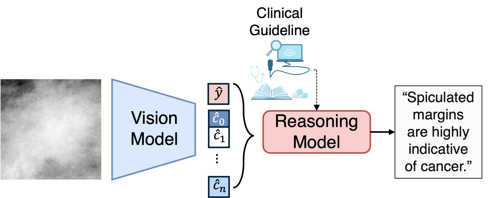
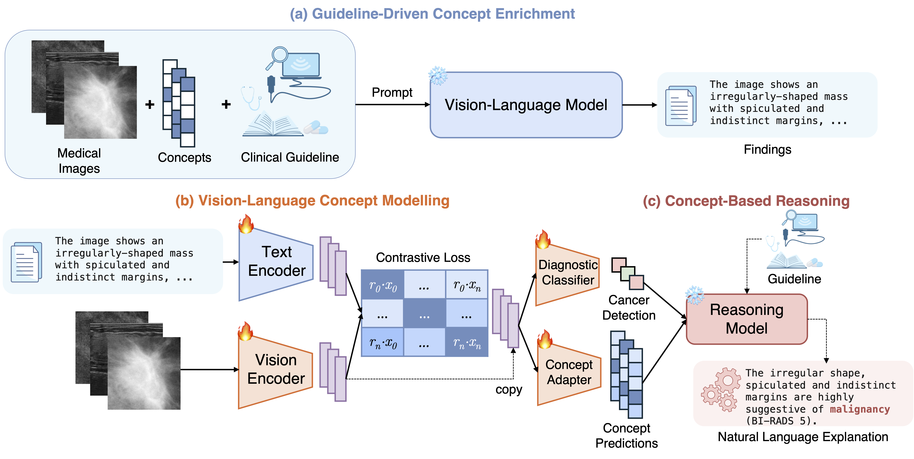
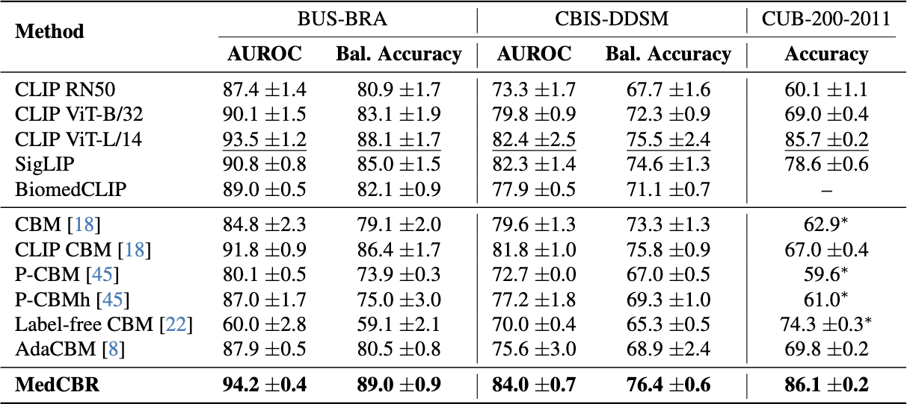
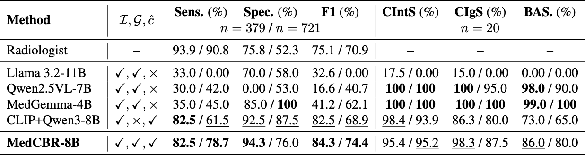
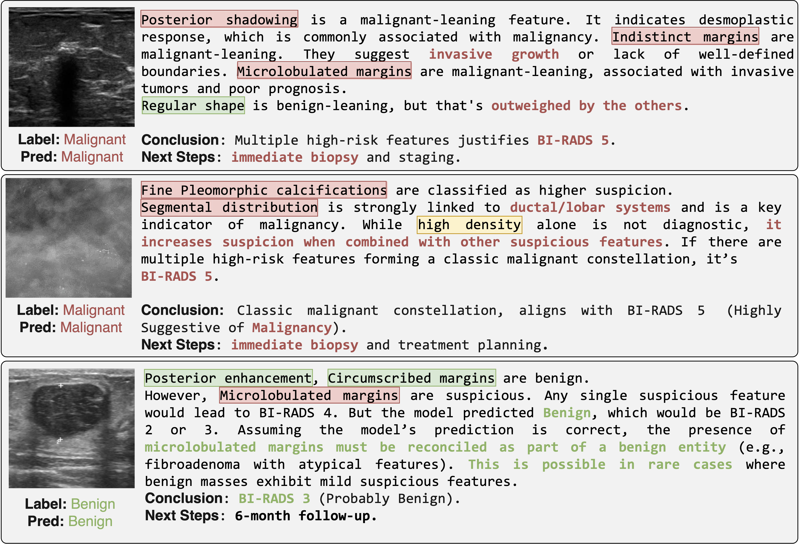
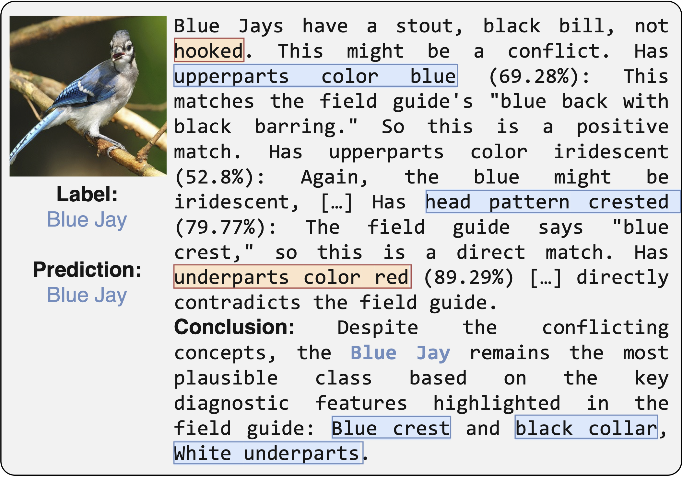

Abstract
Concept Bottleneck Models (CBMs) are a prominent framework for interpretable AI that map learned visual features onto a set of meaningful concepts, to be used for task-specific downstream predictions. Their sequential structure enhances transparency by connecting model predictions to the underlying concepts that support them. In medical imaging, where transparency is essential, CBMs offer an appealing foundation for explainable model design. However, their discrete concept representations overlook broader clinical context such as diagnostic guidelines and expert heuristics, reducing reliability in complex cases. We propose MedCBR, a concept-based reasoning framework that integrates clinical guidelines with vision–language and reasoning models. Labeled clinical descriptors are transformed into guideline-conformant text, and a concept-based model is trained with a multi-task objective combining multi-modal contrastive alignment, concept supervision, and diagnostic classification to jointly ground image features, concepts, and pathology. A reasoning model then converts these predictions into structured clinical narratives that explain the diagnosis, emulating expert reasoning based on established guidelines. MedCBR achieves superior diagnostic and concept-level performance, with AUROCs of 94.2\% on ultrasound and 84.0\% on mammography. Further experiments were also performed on non-medical datasets, with 86.1\% accuracy. Our framework enhances interpretability and forms an end-to-end bridge from medical image analysis to decision-making.

MedCBR: We frame interpretable medical image analysis as reasoning over diverse sources of evidence,
including model predictions and clinical guidelines.
Key Contributions
- A clinician-facing reasoning module generates structured diagnostic narratives by integrating clinical guidelines with the predictions of a concept-based model to emulate the reasoning process used by clinicians, and produce transparent explanations of its predictions.
- A new concept enrichment strategy that mitigates noise and incompleteness in human-annotated concepts by leveraging a large vision–language model (LVLM) to generate structured reports conditioned on the image, the concept ground truths, and the guideline. These enriched textual representations capture the contextual and relational meaning of visual findings, providing stronger and more consistent supervision.
- A multi-task vision–language concept model that contrastively aligns images with the LVLM-enriched reports while jointly optimizing for concept and diagnosis prediction. This formulation encourages the vision encoder to learn clinically meaningful representations. within a shared embedding space. Models trained under this strategy demonstrate improved generalization and higher diagnostic performance across multiple benchmarks.
- Improved performance and interpretability on two breast cancer detection benchmarks, outperforming both standard CBMs and end-to-end vision–language models.
Model Architecture

MedCBR integrates clinical knowledge, vision-language alignment, and reasoning for interpretable cancer detection.
- (a) A large vision-language model (LVLM) generates guideline-conformant reports from input images and coarse concept annotations.
- (b) A multi-task concept-based model is trained to align image features with the LVLM-generated reports while jointly optimizing for concept and diagnosis prediction. This encourages the vision encoder to learn clinically meaningful representations.
- (c) A reasoning module integrates the model's predictions with clinical guidelines to generate structured diagnostic narratives that explain the diagnosis.
Results

MedCBR is evaluated on 3 datasets: breast ultrasound (BUS-BRA), mammography (CBIS-DDSM), and natural images (CUB-200). On all 3 datasets, MedCBR outperforms standard CBMs by a wide margin (+7.9% avg improvement), and competes with end-to-end SOTA VLMs such as LAION-2B CLIP and SigLIP.

MedCBR achieves the highest overall clinical utility on both BUS-BRA and CBIS-DDSM, attaining the best F1 while maintaining high sensitivity and specificity. Compared to radiologists, MedCBR achieves markedly higher specificity on both datasets, indicating fewer false positives, and it also attains the highest sensitivity among the VLM baselines.
Qualitative Analysis

MedCBR produces coherent reasoning and decision patterns that mirror how radiologists weigh conflicting evidence, correctly interpreting malignant-leaning descriptors and linking them to plausible pathological correlates such as invasive growth.

MedCBR can be extended to natural image reasoning tasks. In this example, the model explains the presence of a Blue Jay in the image through the integration of key diagnostic features such as the bird's blue coloration, crest, and distinctive markings. Conflicting cues are highlighted in orange.
Conclusion
We present MedCBR, a concept-based reasoning framework that integrates clinical guidelines with vision–language and reasoning models for interpretable medical image analysis. By enriching concept supervision with LVLM-generated reports and employing a reasoning module to generate structured diagnostic narratives, MedCBR achieves superior diagnostic performance while providing transparent explanations of its predictions. Our framework demonstrates the potential of combining clinical knowledge with advanced AI techniques to enhance interpretability and reliability in medical image analysis, paving the way for more trustworthy and clinically useful AI systems.
BibTeX
@inproceedings{harmanani2025vision,
title={Vision-Language Models Encode Clinical Guidelines for Concept-Based Medical Reasoning},
author={Harmanani, Mohamed and Long, Bining and Guo, Zhuoxin and Wilson, Paul FR and Sabour, Amirhossein and To, Minh Nguyen Nhat and Fichtinger, Gabor and Abolmaesumi, Purang and Mousavi, Parvin},
year={2026},
booktitle ={Findings of the IEEE/CVF Conference on Computer Vision and Pattern Recognition (CVPR)},
}